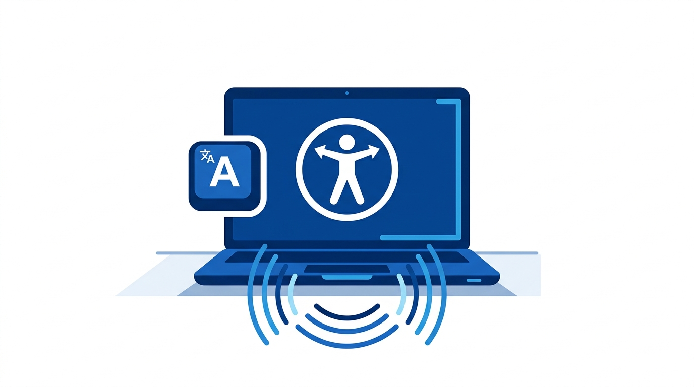
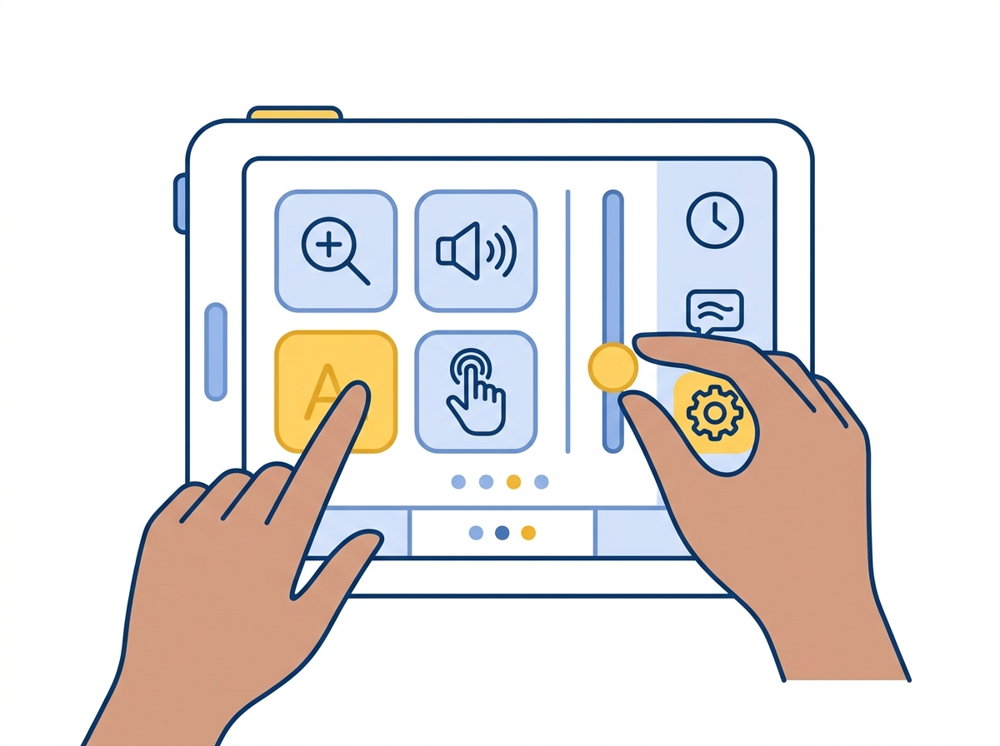

1. Perceptível
As informações e os componentes da interface devem ser apresentados aos usuários de formas que eles possam perceber.
Construindo a web do futuro: inclusiva, navegável e funcional para todas as pessoas, independentemente de suas capacidades visuais, motoras ou cognitivas.


A acessibilidade na web garante que todas as pessoas possam perceber, compreender, navegar e interagir de forma autônoma e eficiente em ambientes digitais.
Alinhados com as diretrizes WCAG (Web Content Accessibility Guidelines) da W3C, desenvolvemos soluções focadas na inclusão de usuários de leitores de tela, ampliações de texto e navegação adaptada por teclado.
Princípios fundamentais para criar interfaces acessíveis.
As informações e os componentes da interface devem ser apresentados aos usuários de formas que eles possam perceber.
Os componentes de interface e a navegação devem ser operáveis por teclado e outras tecnologias assistivas.
As informações e a operação da interface do usuário devem ser claras, previsíveis e fáceis de entender.
O conteúdo deve ser robusto o suficiente para ser interpretado por uma ampla variedade de agentes e dispositivos.